| set | mean_x | mean_y | sd_x | sd_y | cor |
|---|---|---|---|---|---|
| 1 | 9 | 7.5 | 3.32 | 2.03 | 0.82 |
| 2 | 9 | 7.5 | 3.32 | 2.03 | 0.82 |
| 3 | 9 | 7.5 | 3.32 | 2.03 | 0.82 |
| 4 | 9 | 7.5 | 3.32 | 2.03 | 0.82 |
Your First Visualization
PSY 410: Data Science for Psychology
Dr. Sara Weston
2026-04-01
Why visualize?
Anscombe’s Quartet
Four datasets with identical summary statistics:
But look at the plots!

Always visualize your data before running statistics.
The datasaurus dozen
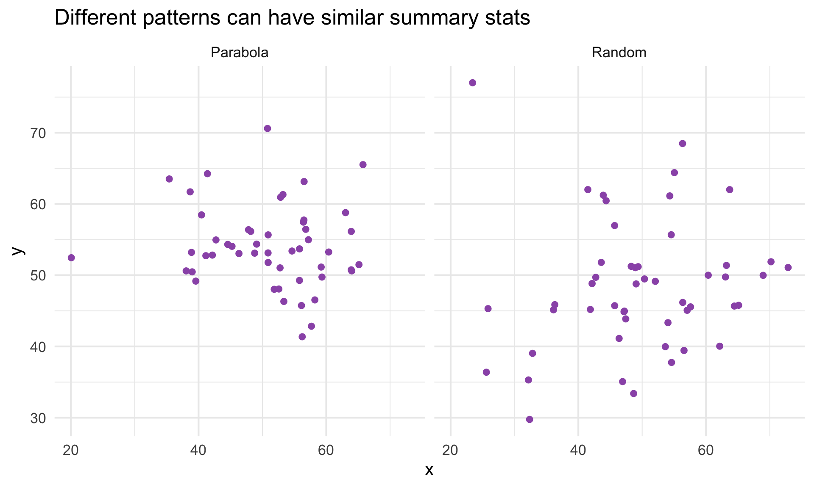Introduction to ggplot2
What is ggplot2?
- Created by Hadley Wickham (2005)
- Based on the Grammar of Graphics by Leland Wilkinson
- Most popular R visualization package
- Part of the tidyverse
The “gg” stands for “Grammar of Graphics”
The grammar of graphics
Every ggplot has three essential components:
- Data — what you want to visualize
- Aesthetics (aes) — how variables map to visual properties
- Geoms — what geometric shapes represent the data
Our dataset: mpg
Rows: 234
Columns: 11
$ manufacturer <chr> "audi", "audi", "audi", "audi", "audi", "audi", "audi", "…
$ model <chr> "a4", "a4", "a4", "a4", "a4", "a4", "a4", "a4 quattro", "…
$ displ <dbl> 1.8, 1.8, 2.0, 2.0, 2.8, 2.8, 3.1, 1.8, 1.8, 2.0, 2.0, 2.…
$ year <int> 1999, 1999, 2008, 2008, 1999, 1999, 2008, 1999, 1999, 200…
$ cyl <int> 4, 4, 4, 4, 6, 6, 6, 4, 4, 4, 4, 6, 6, 6, 6, 6, 6, 8, 8, …
$ trans <chr> "auto(l5)", "manual(m5)", "manual(m6)", "auto(av)", "auto…
$ drv <chr> "f", "f", "f", "f", "f", "f", "f", "4", "4", "4", "4", "4…
$ cty <int> 18, 21, 20, 21, 16, 18, 18, 18, 16, 20, 19, 15, 17, 17, 1…
$ hwy <int> 29, 29, 31, 30, 26, 26, 27, 26, 25, 28, 27, 25, 25, 25, 2…
$ fl <chr> "p", "p", "p", "p", "p", "p", "p", "p", "p", "p", "p", "p…
$ class <chr> "compact", "compact", "compact", "compact", "compact", "c…Your first plot
Your first plot

Breaking it down
data = mpg— use the mpg datasetaes(x = displ, y = hwy)— map displacement to x, highway mpg to ygeom_point()— represent data as points
A cleaner way to write it
You can drop data = and mapping =:
I’ll use the middle version — clear but not overly verbose.
Aesthetic mappings
What are aesthetics?
Aesthetics are visual properties of geoms:
x,y— positioncolor— outline colorfill— interior colorsize— how bigshape— what shapealpha— transparency
Mapping color to a variable
What if we want to see which points are which car class?
Mapping color to a variable
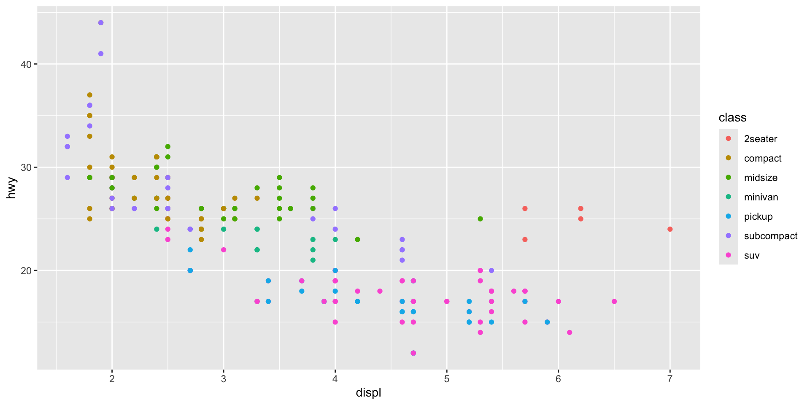
Mapping size to a variable
Mapping size to a variable

Mapping alpha (transparency)
Mapping alpha (transparency)
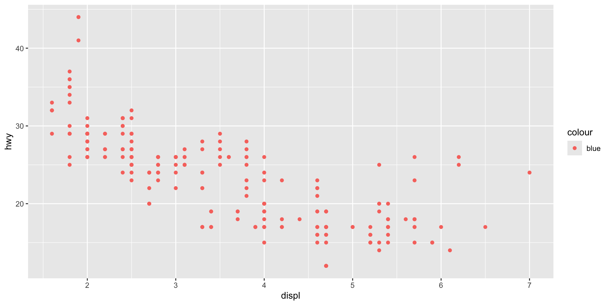
Mapping shape
Mapping shape
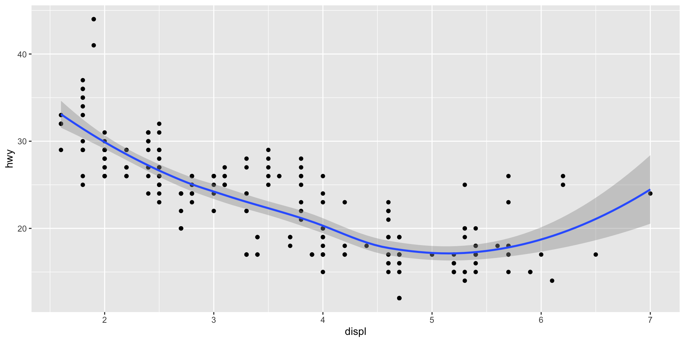
Combining multiple aesthetics
Combining multiple aesthetics
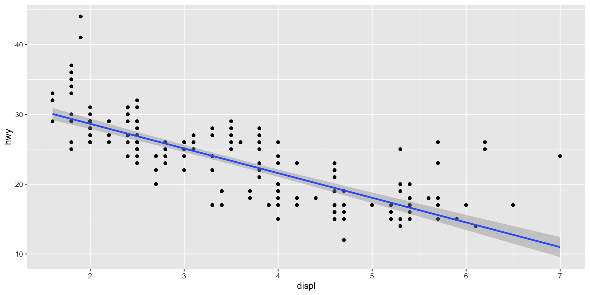
Setting vs. mapping
Mapping — aesthetic varies with data (inside aes())
Setting — aesthetic is constant (outside aes())
Setting aesthetics manually
Setting aesthetics manually
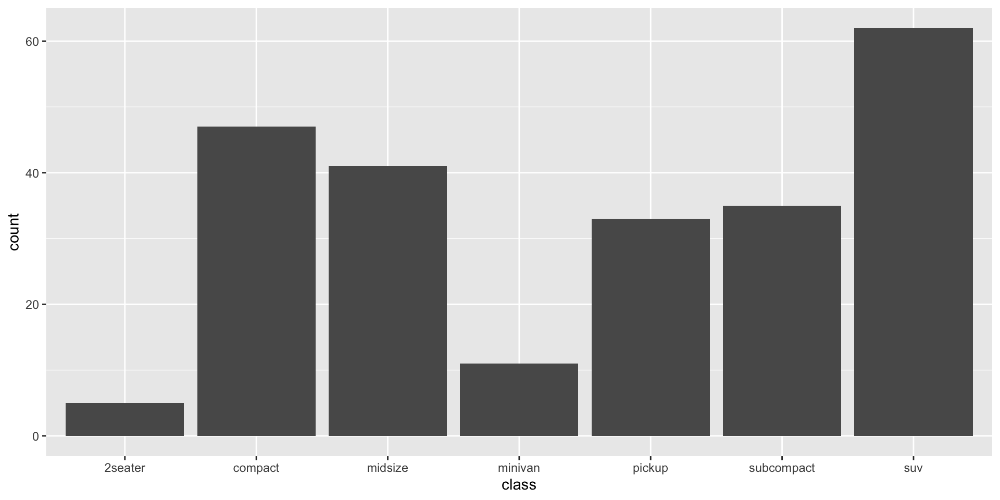
Common mistake!
ggplot thinks “blue” is a category name!
Common mistake!

Pair coding break
Your turn: 10 minutes
With a partner, create a scatterplot using the mpg dataset:
- Plot
cty(x-axis) vshwy(y-axis) - Color points by fuel type (
fl) - Add a smooth trend line
- Give it a title and axis labels
- Who can make theirs look the best?
Tip
You have everything you need from the last few slides. Start with the basic template and build from there.
Before we move on
📤 Upload your code to Canvas for participation credit. Paste what you have into today’s in-class submission — it doesn’t need to work perfectly.
Geoms
Common geoms
| Geom | What it makes |
|---|---|
geom_point() |
Scatterplot |
geom_line() |
Line graph |
geom_bar() |
Bar chart |
geom_histogram() |
Histogram |
geom_boxplot() |
Box plot |
geom_smooth() |
Smoothed line |
geom_smooth()
Add a trend line to your scatterplot:
geom_smooth()
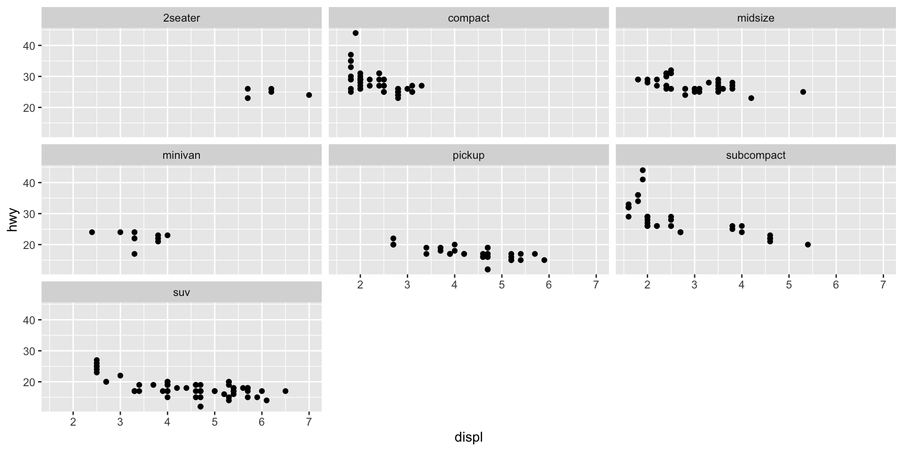
Linear trend line
Linear trend line

Layering geoms
Each + adds a layer:
Layering geoms
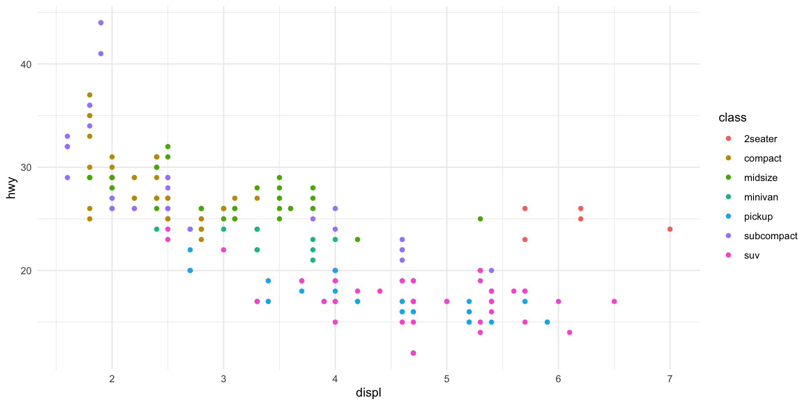
geom_bar() — categorical data
geom_bar() — categorical data

geom_histogram() — distributions
geom_histogram() — distributions
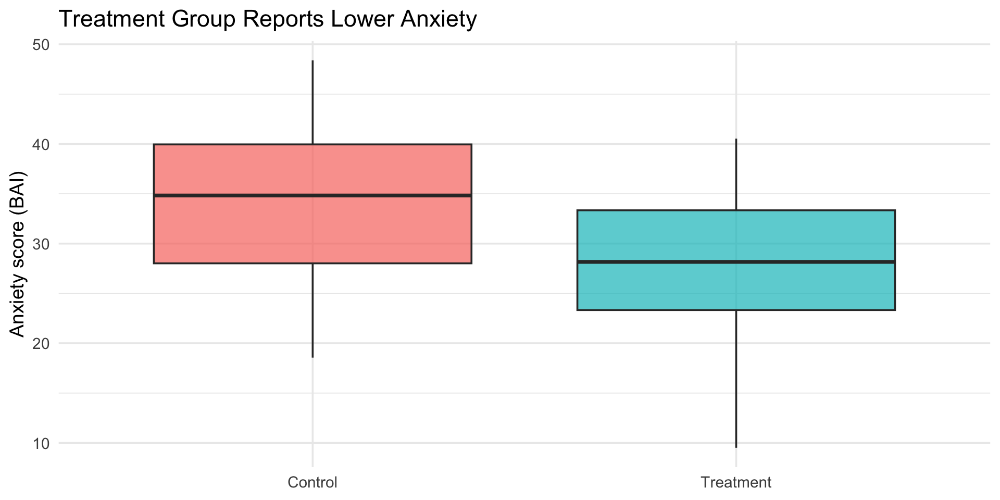
geom_boxplot() — comparing groups
geom_boxplot() — comparing groups
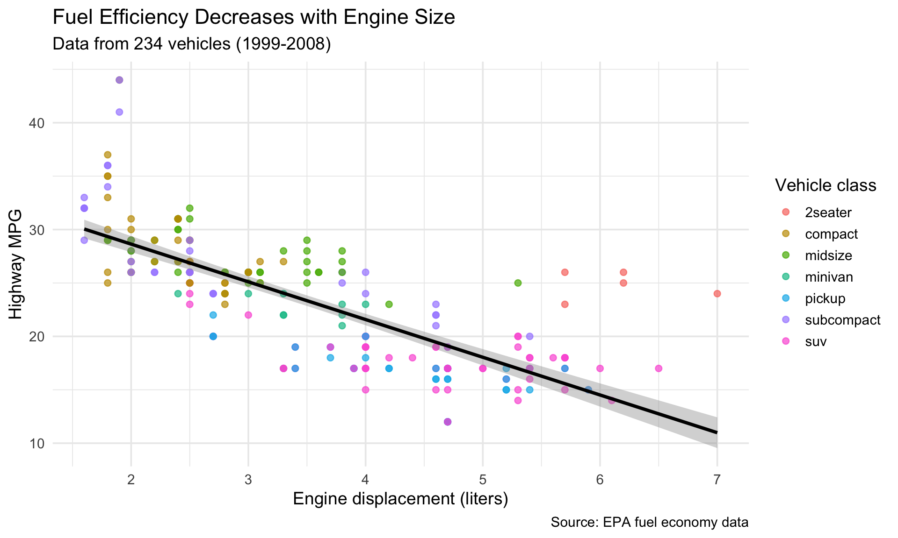
Facets
What are facets?
Facets split your plot into small multiples based on a variable.
What are facets?

facet_wrap()
Creates a ribbon of panels:
- Use
ncolornrowto control layout scales = "free"allows different axis ranges
facet_grid()
Creates a grid of panels with two variables:
facet_grid()
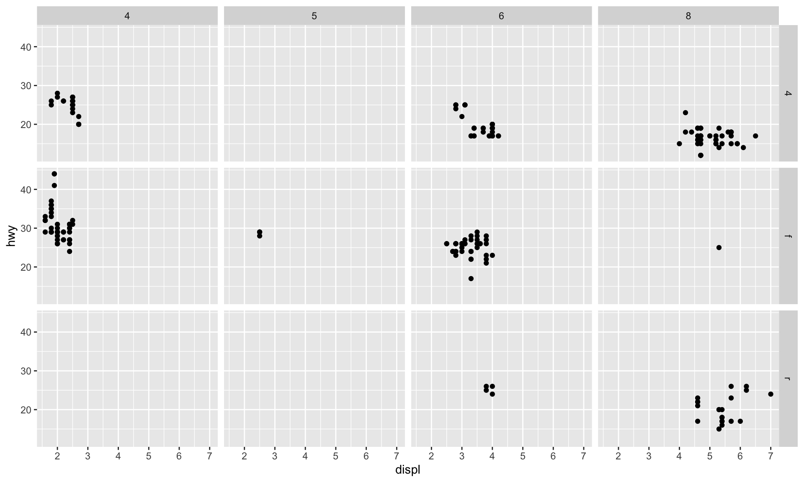
When to use facets
Facets are great when:
- You have too many colors/shapes to distinguish
- You want to compare patterns across groups
- You want each group to “stand alone”
Making it look good
Adding labels
Adding labels

Themes
Themes control the overall look:
Themes
Built-in themes
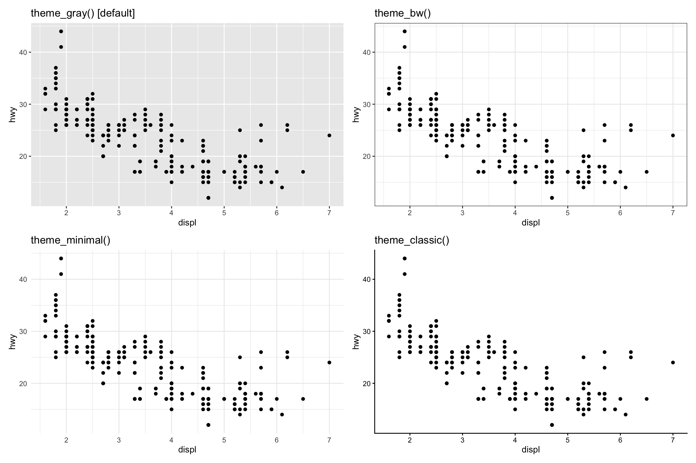Saving plots
Use ggsave() to save your plot:
Putting it together
A complete example
ggplot(mpg, aes(x = displ, y = hwy)) +
geom_point(aes(color = class), size = 2, alpha = 0.7) +
geom_smooth(method = "lm", color = "black", se = TRUE) +
labs(
title = "Fuel Efficiency Decreases with Engine Size",
subtitle = "Data from 234 vehicles (1999-2008)",
x = "Engine displacement (liters)",
y = "Highway MPG",
color = "Vehicle class",
caption = "Source: EPA fuel economy data"
) +
theme_minimal(base_size = 14)A complete example

Get a head start: Assignment 1
Open a new R script in your project. Try these on your own:
- Make a scatterplot of
displvshwyfrommpg - Color it by
class - Facet by
drv(drive type) - Save it with
ggsave()
This is the first part of Assignment 1 — finish it before next class.
Wrapping up
The ggplot2 template
You can build almost any visualization with this template!
Before next class
📖 Read:
- R4DS Ch 3: Data transformation (sections 3.1–3.4)
✅ Practice:
- Create 3 different plots with
mpgordiamonds - Try different geoms, aesthetics, and facets
- Save your favorite plot with
ggsave()
Key takeaways
- Always visualize your data — summary stats can hide patterns
- ggplot2 uses layers — data + aesthetics + geoms
- Aesthetics can be mapped or set —
aes()vs direct values - Facets are powerful — split plots by categories
- Labels and themes matter — make your plots readable
Questions?
Next time: Data Transformation with dplyr
We’ll learn to filter, sort, and create new variables!
PSY 410 | Session 2